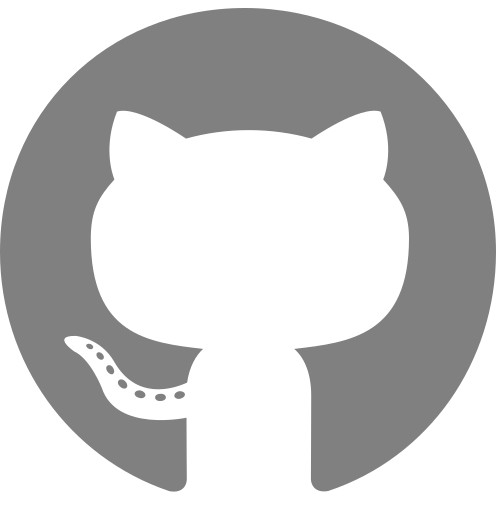

Sebastian Lobentanzer✉ 0000-0003-3399-6695
· 
slobentanzer
· slobentanzer
Heidelberg University, Faculty of Medicine and Heidelberg University Hospital, Institute for Computational Biomedicine, Heidelberg, Germany
Patrick Aloy
Institute for Research in Biomedicine (IRB Barcelona), the Barcelona Institute of Science and Technology, Barcelona, Catalonia, Spain; Institució Catalana de Recerca i Estudis Avançats (ICREA), Barcelona, Catalonia, Spain
Jan Baumbach
Institute for Computational Systems Biology, University of Hamburg, Germany
Balazs Bohar
Earlham Institute, Norwich, UK; Biological Research Centre, Szeged, Hungary
Vincent J. Carey
Channing Division of Network Medicine, Mass General Brigham, Harvard Medical School, Boston, USA
Pornpimol Charoentong
Centre for Quantitative Analysis of Molecular and Cellular Biosystems (Bioquant), Heidelberg University, Im Neuenheimer Feld 267, 69120, Heidelberg, Germany; Department of Medical Oncology, National Centre for Tumour Diseases (NCT), Heidelberg University Hospital (UKHD), Im Neuenheimer Feld 460, 69120, Heidelberg, Germany
Katharina Danhauser
Department of Pediatrics, Dr. von Hauner Children’s Hospital, University Hospital, LMU Munich, Germany
Tunca Doğan
Biological Data Science Lab, Department of Computer Engineering, Hacettepe University, Ankara, Turkey; Department of Bioinformatics, Graduate School of Health Sciences, Hacettepe University, Ankara, Turkey
Johann Dreo
Computational Systems Biomedicine Lab, Department of Computational Biology, Institut Pasteur, Université Paris Cité, Paris, France; Bioinformatics and Biostatistics Hub, Institut Pasteur, Université Paris Cité, Paris, France
Ian Dunham
European Molecular Biology Laboratory, European Bioinformatics Institute (EMBL-EBI), Wellcome Genome Campus, Hinxton, Cambridgeshire CB10 1SD, UK; Open Targets, Wellcome Genome Campus, Hinxton, Cambridgeshire CB10 1SD, UK
Elias Farr
Heidelberg University, Faculty of Medicine, and Heidelberg University Hospital, Institute for Computational Biomedicine, Bioquant, Heidelberg, Germany
Adrià Fernandez-Torras
Institute for Research in Biomedicine (IRB Barcelona), the Barcelona Institute of Science and Technology, Barcelona, Catalonia, Spain
Benjamin M. Gyori
Laboratory of Systems Pharmacology, Harvard Medical School, Boston, USA
Michael Hartung
Institute for Computational Systems Biology, University of Hamburg, Germany
Charles Tapley Hoyt
Laboratory of Systems Pharmacology, Harvard Medical School, Boston, USA
Christoph Klein
Department of Pediatrics, Dr. von Hauner Children’s Hospital, University Hospital, LMU Munich, Germany
Tamas Korcsmaros
Earlham Institute, Norwich, UK; Quadram Institute Bioscience, Norwich, UK
Andreas Maier
Institute for Computational Systems Biology, University of Hamburg, Germany
Matthias Mann
Proteomics Program, Novo Nordisk Foundation Centre for Protein Research, University of Copenhagen, Copenhagen, Denmark; Department of Proteomics and Signal Transduction, Max Planck Institute of Biochemistry, Martinsried, Germany
David Ochoa
European Molecular Biology Laboratory, European Bioinformatics Institute (EMBL-EBI), Wellcome Genome Campus, Hinxton, Cambridgeshire CB10 1SD, UK; Open Targets, Wellcome Genome Campus, Hinxton, Cambridgeshire CB10 1SD, UK
Elena Pareja-Lorente
Institute for Research in Biomedicine (IRB Barcelona), the Barcelona Institute of Science and Technology, Barcelona, Catalonia, Spain
Ferdinand Popp
Applied Tumour Immunity Clinical Cooperation Unit, National Centre for Tumour Diseases (NCT), German Cancer Research Centre (DKFZ), Im Neuenheimer Feld 460, 69120, Heidelberg, Germany
Martin Preusse
Centre for Quantitative Analysis of Molecular and Cellular Biosystems (Bioquant), Heidelberg University, Im Neuenheimer Feld 267, 69120, Heidelberg, Germany
Niklas Probul
Institute for Computational Systems Biology, University of Hamburg, Germany
Benno Schwikowski
Computational Systems Biomedicine Lab, Department of Computational Biology, Institut Pasteur, Université Paris Cité, Paris, France
Bünyamin Sen
Biological Data Science Lab, Department of Computer Engineering, Hacettepe University, Ankara, Turkey; Department of Bioinformatics, Graduate School of Health Sciences, Hacettepe University, Ankara, Turkey
Maximilian T. Strauss
Proteomics Program, Novo Nordisk Foundation Centre for Protein Research, University of Copenhagen, Copenhagen, Denmark
Denes Turei
Heidelberg University, Faculty of Medicine, and Heidelberg University Hospital, Institute for Computational Biomedicine, Bioquant, Heidelberg, Germany
Erva Ulusoy
Biological Data Science Lab, Department of Computer Engineering, Hacettepe University, Ankara, Turkey; Department of Bioinformatics, Graduate School of Health Sciences, Hacettepe University, Ankara, Turkey
Dagmar Waltemath
Centre for Quantitative Analysis of Molecular and Cellular Biosystems (Bioquant), Heidelberg University, Im Neuenheimer Feld 267, 69120, Heidelberg, Germany
Judith A. H. Wodke
Centre for Quantitative Analysis of Molecular and Cellular Biosystems (Bioquant), Heidelberg University, Im Neuenheimer Feld 267, 69120, Heidelberg, Germany
Julio Saez-Rodriguez✉ 0000-0002-8552-8976
·
saezrodriguez
· saezlab
Heidelberg University, Faculty of Medicine and Heidelberg University Hospital, Institute for Computational Biomedicine, Heidelberg, Germany
✉ — Correspondence possible via GitHub Issues
or email to
Sebastian Lobentanzer <sebastian.lobentanzer@gmail.com>,
Julio Saez-Rodriguez <pub.saez@uni-heidelberg.de>.
Main
Biomedical data are amassed at an ever-increasing rate, and machine learning tools that use prior knowledge in combination with biomedical big data are gaining much traction [1,2].
Knowledge graphs (KGs) are rapidly becoming the dominant form of knowledge representation.
KGs are data structures that represent knowledge as a graph to facilitate navigation and analysis of complex information, often by leveraging semantic information.
Their versatility has made them popular in areas such as data storage, reasoning, and explainable artificial intelligence [3].
However, for many research groups, building their own biomedical KG is prohibitively expensive.
This motivated us to build the BioCypher framework to support users in creating KGs (https://biocypher.org).
The ability to build a task-specific KG is important, since directly standardising the representation of biomedical knowledge is not appropriate for the diverse research tasks in the community.
While human researchers can contextualise and abstract concepts easily, the same does not apply to algorithms.
For example, drug discovery tasks (viewing genes as functional ancestors of protein targets) require a different KG structure and content compared to the implementation of a molecular tumour board (genes as clinical markers), which is different still from research into cell type-contextualised gene regulatory network inference (genes as targets of regulatory mechanisms).
Even for similar tasks, the KG structure or subtle decisions about included resources lead to different results for many modern analytic methods [2].
In addition, decisions about how to represent knowledge at each primary resource pose problems in their integration, for instance via the use of different identifier namespaces, levels of granularity, or licences [4,5].
The current landscape of biomedical KGs is not easily navigated; neither the KGs themselves, nor the pipelines used to build them, consistently adhere to FAIR (Findable, Accessible, Interoperable, and Reusable) [6] and TRUST (Transparency, Responsibility, User focus, Sustainability, and Technology) [7] principles.
Understandably, the overhead required to implement these principles may not be justified when building a one-off task-specific KG for research.
Thus, many KGs are built manually for specific applications, which leads to issues in their reuse and integration [4].
For downstream users, the resulting KGs are too distinct to easily compare or combine [5].
Maintaining KGs for the community is additional work; once maintenance stops, they quickly deteriorate, leading to reusability and reproducibility issues [4] (Supplementary Note 1).
BioCypher has been built with continuous consideration of the FAIR and TRUST principles, yielding benefits to the entire community in multiple respects:
Modularity: To rationalise efforts across the community, we propose a modular architecture that maximises reuse of data and code in three ways: input, ontology, and output (Figure 1A).
Input adapters allow delegating maintenance work to one central place for each resource, ontology adapters give access to the wealth of structured information curated by the ontology community, and output adapters allow benchmarking and selection of database management systems.
Together, these mechanisms enable a workflow that reduces the time and effort to develop and deploy custom KGs.
Harmonisation: By using ontologies as expertly crafted repositories of conceptual hierarchies, we facilitate harmonisation from a biological perspective.
We aid with the technical aspects of using and manipulating ontologies, for instance by flexibly extending or hybridising complementary ontologies.
Reproducibility: By sharing the mapping of KG contents to ontologies, we facilitate reproduction of the structure of the corresponding database without access to the primary data, which may be prohibited by licence or privacy issues.
We also enable extraction of subgraphs, effectively converting storage-oriented to task-specific KGs, which due to their reduced sizes are easier to share alongside analyses.
Reusability and accessibility: Finally, the sustainability of research software is strongly related to adoption in – and contributions from – the community.
BioCypher is developed as a TRUSTworthy open-source software, applying methods of continuous integration and deployment, and including a diverse community of researchers and developers from the beginning.
This facilitates workflows that are tested end-to-end, including the integrity of the scientific data.
We operate under the permissive MIT licence and provide community members with guidelines for their contributions and a code of conduct (https://github.com/biocypher).
Different measures further increase the accessibility and FAIRness of our framework.
For example, we provide a template repository for a BioCypher pipeline with adapters, including a Docker Compose setup.
To enable learning by example, we curate existing pipelines, as well as all adapters they use, in our GitHub organisation.
Using the GitHub API and a BioCypher pipeline, we build a “meta-graph” for the simple browsing and analysis of BioCypher workflows (https://meta.biocypher.org).
To inform the contents of this meta-graph, we have reactivated and now maintain the Biomedical Resource Ontology (BRO [8]), which helps to categorise pipelines and adapters into research areas, data types, and purposes (Supplementary Note 2).
{#fig:1}
BioCypher is implemented as a Python library that provides a low-code access point to data processing and ontology manipulation, emphasising the reuse of existing resources to the highest extent possible.
We have begun to open the platform to other bioinformatics ecosystems, starting with R/Bioconductor (https://biocypher.org/r-bioc.html).
By our design principles and the automation of data management tasks, we aim to free up developer time and guide decision making on how to represent knowledge, bridging the gap between the field of biomedical ontology and the broad application of databases in research.
By abstracting the KG build process as a combination of modular input adapters, we save developer time in the maintenance of integrative resources built from overlapping primary sources (Figure 1B), for instance OmniPath [9], Bioteque [2], CROssBAR DB [10], and the Clinical Knowledge Graph [11].
By mapping the contents of those resources onto a common ontological space, we gain interoperability between the different biomedical domains (Figure 1C).
BioCypher helps with the mapping procedure by providing examples and an interface, as well as numerous user-friendliness measures.
By using the industry standard Web Ontology Language (OWL) format, we provide access to the majority of available ontologies.
Separating the ontology framework from the modelled data enables the implementation of reasoning applications at the ontology level, for instance the ad-hoc harmonisation of disease ontologies.
By providing access to a range of modular output adapters, we facilitate the project-specific benchmarking and selection of suitable database management systems.
For instance, a Neo4j adapter provides rapid access to extensive databases for maintenance of knowledge and enables queries from analysis (Jupyter) notebooks.
Switching to alternative graph or relational databases (e.g., ArangoDB or PostgreSQL) allows for task-specific performance optimisation.
A CSV-writer and Python-native adapters (e.g., Pandas, sparse matrix, or NetworkX formats) yield knowledge representations that can directly be used programmatically by a wide range of machine learning frameworks.
Due to BioCypher’s modular nature, additional output adapters can quickly be added.
Application programming interfaces (APIs) built on top of the BioCypher KGs enable complex and versatile queries and simplify the interaction of users with the knowledge.
For example, web widgets and apps (such as drug discovery and repositioning with https://crossbar.kansil.org and analysis workflows with https://drugst.one) allow researchers to browse and customise the database, and to plug it into standard pipelines.
Additionally, a structured, semantically enriched knowledge representation facilitates connection to and improves performance of modern natural language processing applications such as GPT [12], which can be specifically tuned for biomedical research [13].
The use of common standards enables sharing of tools across projects and communities or in cloud-based services that preserve sensitive patient data (Supplementary Note 3).
There have been numerous attempts at standardising KGs and making biomedical data stores more interoperable.
We can identify three general types of approaches, in increasing order of abstraction: centrally maintained databases, explicit standard formats (modelling languages), and KG frameworks.
With BioCypher, we aim to improve user-friendliness on all three levels of abstraction; for an in-depth discussion, see Supplementary Note 4.
Despite many efforts, there is no widely accepted solution.
Very often, resources take the “path of least resistance” in adopting their own, arbitrary formats of representation. To our knowledge, no framework provides easy access to state-of-the-art KGs to the average biomedical researcher, a gap that BioCypher aims to fill.
We demonstrate some key advantages of BioCypher by case studies in Supplementary Note 5.
We believe that creating a more interoperable biomedical research community is as much a social effort as it is a scientific software problem.
To facilitate adoption of any approach, the process must be made as simple as possible, and it must yield tangible rewards, such as significant savings in developer time.
We will provide hands-on training for all interested researchers, and we invite all database and tool developers to join our collective effort.
Acknowledgements
This project has received funding from the European Union’s Horizon 2020 research and innovation programme (grant agreement No 965193 [DECIDER] and 116030 [TransQST]), the German Federal Ministry of Education and Research (BMBF, Computational Life Sciences grant No 031L0181B and MSCoreSys research initiative research core SMART-CARE 031L0212A), the Defense Advanced Research Projects Agency (DARPA) Young Faculty Award [W911NF-20-1-0255], and the Medical Informatics Initiative Germany, MIRACUM consortium, FKZ: 01ZZ2019.
We thank Henning Hermjakob, Benjamin Haibe-Kains, Pablo Rodriguez-Mier, Daniel Dimitrov, and Olga Ivanova for feedback on the manuscript, and Ben Hitz and Pedro Assis for feedback on their use of BioCypher.
Author Contributions
The project was conceived by SL and JSR.
The software was developed by SL with input from DT.
The manuscript was drafted by SL, edited by JSR, and jointly revised by all co-authors.
All co-authors as members of the BioCypher Consortium contributed to the case studies in development and writing and gave feedback for software development, which was coordinated and integrated by SL.
Conflict of Interest
JSR reports funding from GSK, Pfizer and Sanofi and fees from Travere Therapeutics and Astex Pharmaceuticals.
Supplementary Methods
BioCypher is implemented as a Python package.
Its structure follows the purpose of a threefold modularity of inputs, ontology, and outputs.
A user interface class (“core”) receives user choices via configuration YAML files and connects the inputs provided by resource-specific adapters to either bulk disk-writing methods or driver-based connections tailor-made for database management systems.
It also manages the mapping of data inputs to ontologies with the help of an ontology module.
This modular architecture facilitates extension of all modules according to the community’s needs.
The resulting knowledge graphs (KGs) can be described as “instance-based” realisations of biomedical concepts: using the concept definition from the ontology, each entity in the graph becomes an instance of this concept.
We recommend the use of a generic “high-level” ontology such as the Biolink model [14], a comprehensive and generic biomedical ontology; where needed, this ontology can be exchanged with or extended by more specific and task-directed ontologies, for instance from the OBO Foundry [15].
The versions of all used ontologies should be specified by each pipeline, which can most effectively be realised by specifying a persistent URL (PURL) for the versioned ontology file (most commonly in OWL format) in the BioCypher configuration.
Identifier namespaces are collected from the community-curated and frequently updated Bioregistry service [16], which is important for ensuring continued compatibility among the created KGs.
Bioregistry also supplies convenient methods for parsing identifier Compact URIs (CURIEs), which are the preferred method of unambiguously specifying identities of KG entities.
For identifier mapping, where required, the corresponding facilities of pypath [9] are used and extended.
The preferred way of entering data into a BioCypher graph attaches scientific provenance to each entry, allowing the aggregation of data with respect to their sources (for instance, the publication an interaction was derived from) and thus avoiding problems such as duplicate counting of the same primary data from different secondary curations.
For author attribution, the preferred way of entering data into BioCypher also includes the exact provenance of each entry.
In the same way, all licences of the contents are propagated forward, enabling the users of the framework to easily determine the allowed uses for any given KG.
This behaviour can be enforced by using BioCypher’s “strict mode.” The attachment of this information can be particularly useful in cases in which a subset of the graph does not fulfil the user’s requirements; individual entity annotation allows the usage of only the parts of the KG that are covered by the rights of the user.
While the ultimate responsibility of correct interpretation and execution of licensing issues lies with the end user, we strive to make the task as accessible as possible.
BioCypher is a free software under MIT licence, openly developed and available at https://github.com/biocypher and via PyPI.
We are generally compatible with the three most recent Python versions (which currently is 3.9 or higher).
Community contributions in the form of GitHub issues or pull requests are very welcome and encouraged.
More details and a tutorial can be found in the documentation at https://biocypher.org.
Supplementary Note 1 - Background
We here give some background and references on the problem of standardising biomedical knowledge representation.
Biomedical knowledge, although increasingly abundant, is fragmented across hundreds of resources.
For instance, a clinical researcher may use protein information from UniProtKB [17], genetic variants from COSMIC [18], protein interactions from IntAct [19], and information on clinical trials from ClinicalTrials.gov [20].
Finding the most suitable KG for a specific task is challenging and time-consuming; they are published in isolation and there is no registry [4,5].
Few available KG solutions perfectly fit the task the individual researcher wants to perform, but creating custom KGs is only possible for those that can afford years of development time by an individual [2,21] or even entire teams [22].
Smaller or non-bioinformatics labs need to choose from publicly available KGs, limiting customisation and the use of non-public data.
There exist frameworks to build certain kinds of KG from scratch [23,24], but these are difficult to use for researchers outside of the ontology subfield and often have a rigid underlying data model 10,[25].
Even task-specific knowledge graphs sometimes need to be built locally by the user due to licensing or maintenance reasons, which requires significant technical expertise [26].
Modifying an existing, comprehensive KG for a specific purpose is a non-trivial and often manual process prone to lack of reproducibility [27].
Supplementary Note 2 - Approach
We expand here on our section in the main text, detailing the four pillars of our approach.
Modularity: To rationalise efforts across the community, we propose a flexible modular architecture that maximises reuse of data and code in three ways: input, ontology, and output.
Input adapters allow delegating maintenance work to one central place for each resource, ontology adapters give access to the wealth of structured information curated by the ontology community, and output adapters allow benchmarking and selection of database management systems.
Together, these mechanisms shall enable an agile workflow that drastically reduces the time and effort to develop and deploy custom KGs for small teams.
See the case study “Modularity” and others for more information.
Harmonisation: To facilitate harmonisation of datasets from a biological perspective, we propose to use ontology mapping (referring to a hierarchical organisation of biological concepts).
Primary data sources may represent similar data in different ways.
BioCypher harmonises biomedical data by mapping divergent representations onto the same biological concept, and aids with the technical aspects of ontology manipulation (see case study “Tumour board”).
In addition, the ontological information projected onto each KG entity allows for more flexible and informative queries in downstream analyses (see case study “Network expansion”).
Reproducibility: By sharing the ontology mapping from (2) in a project-specific manner, a database used for a specific task can be reproduced more effectively.
Since sharing the databases themselves is often prohibited by their large size, BioCypher facilitates the creation of task-specific subsets of databases to be shared alongside analyses.
Extensive automation reduces development time and file sizes, while additionally making the shared dataset independent of database software versions (see case studies “Network expansion”, “Subgraph extraction”, and “Embedding”).
Reusability and accessibility: Our template repository for a BioCypher pipeline with adapters, including a Docker Compose setup, is available on GitHub.
To enable learning by example, we curate existing pipelines as well as all adapters they use in a GitHub project that is tied to the BioCypher repository.
With these data, using the GitHub API and a pipeline based on our template, we build a BioCypher “meta-graph” for the simple browsing and analysis of existing BioCypher workflows (https://meta.biocypher.org/).
To inform the structure of this meta-graph, we have reactivated and now maintain the Biomedical Resource Ontology (BRO [8]), which allows the categorisation of pipelines and adapters (now on GitHub).
While data FAIRness is a necessary part of open science communication, it is not sufficient for the adoption and sustainability of a software project such as BioCypher.
As such, we also implement measures based on the TRUST principles, to increase usability, accessibility, and extensibility of our framework.
For more information, see the following Supplementary Text on “Sustainable Development.”
Sustainable Development
We have implemented numerous measures to increase the user-friendliness of our framework.
The BioCypher ecosystem is maintained centrally at https://github.com/biocypher, which includes projects for the management of development and the components of BioCypher pipelines (adapters and ontologies).
These projects serve as the ground truth for available BioCypher modules, and are used by a BioCypher pipeline (https://github.com/biocypher/meta-graph) to build an overview graph database that is automatically deployed to our server as a freely accessible Neo4j browser instance (at https://meta.biocypher.org, no login credentials required).
Prospective users can use the board and the graph to find examples and reusable components for their own KG.
We provide a template repository (https://github.com/biocypher/project-template) that guides new users through the process of deploying their own KG.
It includes a docker compose setup which can be used to execute the KG build step and automatically transfer the KG into a Neo4j database running in the official Neo4j Docker container, thus being automatically secure to deploy.
We provide a detailed tutorial for all aspects of BioCypher on our web page, https://biocypher.org, which we update regularly as new features are added.
We provide easy access to our community on that page, including email contact, a mailing list, and a community chat channel at https://biocypher.zulipchat.com.
We also explicitly encourage contributions and getting in contact, and we offer help through online or in-person seminars and meetings.
We provide community guidelines, a code of conduct, and a developer guide for contributing.
We participate in and organise hackathons to educate about knowledge representation and improve interoperability with other software ecosystems, such as Bioconductor and Galaxy.
Supplementary Note 3 - Implementation
We build on recent technological and conceptual developments in biomedical ontologies that greatly facilitate the harmonisation of biomedical knowledge and advocate a philosophy of reuse of open-source software.
For instance, we integrate a comprehensive “high-level” biomedical ontology, the Biolink model 1, which can be replaced or extended by more domain-specific ontologies as needed, and an extensive catalogue and resolver for biomedical identifier resources, the Bioregistry 3.
Both projects, like BioCypher, are open-source and community-driven.
The ontologies serve as a framework for the representation of biomedical concepts; by supporting the Web Ontology Language (OWL), BioCypher allows integration and manipulation of most ontologies, including those generated by Large Language Models.
Separating the ontology framework from the modelled data allows implementation of reasoning applications at the ontology level, for instance the ad-hoc harmonisation of multiple disease ontologies before mapping the data points.
For instance, with a group of users that are knowledgeable in ontology, a way to harmonise the divergent or incomplete ontologies can be developed, e.g.
on the topic of diseases, before using them to inform the knowledge representation output.
In addition, new developments in the field of language models and grounding will enable plugging “automatic” grounding into the ontology adapter in BioCypher, helping more novice users with the mapping between KG entities and the corresponding ontologies (see for instance https://github.com/ccb-hms/ontology-mapper).
Building a task-specific KG, given existing configuration, takes only minutes, and creating a KG from scratch can be achieved in a few days of work.
This allows for rapid prototyping and automated machine learning (ML) pipelines that iterate the KG structure to optimise predictive performance; for instance, building custom task-specific KGs for graph embeddings and ML (see case study “Embeddings”).
Despite its speed, automated testing of millions of entities and relationships per KG increases trust in the consistency of the data (see Supplementary Methods for details and the case study “Network expansion” for an example).
Supplementary Note 4 - Prior Art
There have been numerous attempts at standardising knowledge graphs and making biomedical data stores more interoperable [4,5].
They can be divided into three broad classes representing increasing levels of abstraction of the KG build process:
Centrally maintained databases include task-oriented data collections such as OmniPath 4 or the CKG [11].
They are the least flexible form of knowledge representation, usually bound to a specific research purpose, and are highly dependent on their primary maintainers for continuous functioning.
BioCypher reduces the development and maintenance overhead that usually goes along with such a resource, making a task-specific KG feasible for smaller and less bioinformatics-focused groups.
These databases usually do not conform to any standard in their knowledge representation, hindering their integration.
In contrast, with BioCypher, we migrate OmniPath, CKG, and other popular databases onto an interoperable KG framework.
Explicit standard formats or modelling languages include the Biolink model 1, BEL [28], GO-CAM [29], SBML [30], BioPAX [31], and PSI-MI [32].
There are many more, each a solution to a very specific problem, as reviewed elsewhere [28,33]; some are part of the COMBINE standard ecosystem [34].
Their main shortcoming is the rigidity that follows from their data model definitions: to represent data in one of these languages, the user needs to fully adopt it.
If the task exceeds the scope of the language, the user needs to either look for alternatives, or introduce new features into the language, which can be a lengthy process.
In addition, some features may be incompatible, and thus, one centrally maintained language definition is fundamentally limited.
With BioCypher, each of the above languages can be adopted as the basis for a particular knowledge graph; in fact, we use the Biolink model as a basic ontology.
Inside our framework, these languages can be freely and transparently exchanged, modified, extended, and hybridised, as we show in several of our case studies (e.g., “Tumour board” extends Biolink with Sequence Ontology and Disease Ontology).
KG frameworks provide a means to build KGs, similar to the idea of BioCypher 14;[24];[25];[35].
However, most tie themselves tightly to a particular standard format or modelling language ecosystem, thereby inheriting many of the limitations described above.
The Knowledge Graph Hub provides a data loader pipeline, KGX allows conversion of KGs between different technical formats, and RTX-KG2 builds a fixed semantically standardised KG; all three adhere to the Biolink model [25,35].
Bio2BEL is an extensive framework to transform primary databases into BEL [24].
PheKnowLator is the only tool that is conceptually similar to BioCypher in that it allows the creation of knowledge graphs under different data models 14.
However, it appears to be aimed at knowledge representation experts, requiring considerable bioinformatics and ontology expertise.
While being fully customisable, it does not feature flexible recombination of modular components.
The strategy of subgraph extraction to yield smaller, user-specific KGs has been implemented previously, for instance by CROssBAR (v1), ROBOKOP, and the BioThings Explorer [10];[36];[37].
However, these rely on single (and thus enormous) harmonised KGs for extracting the subgraphs as opposed to BioCypher’s modular approach [38].
While the “top-down” approach of first building a massive KG and then extracting subgraphs from it is a valid means to arrive at a particular knowledge representation, the effort involved is detrimental to efficiency and democratisation of the process.
A secondary consequence of this large primary effort is that alternative representations of the initial KG will probably not be attempted, hindering flexible knowledge representation.
In contrast, the “bottom-up” approach we follow in BioCypher emphasises modular recombination and flexible representation with small effort overheads.
Ontology mapping has been leveraged for data integration by consortia such as the Monarch Initiative (which is the parent organisation of the MONDO Disease Ontology and the Biolink model, among others) as well as single projects, such as KaBOB [39,40].
While conceptually related to BioCypher in the use of ontology and biomedical data, these are massive efforts that are not amenable to replication by the average research group.
We aim to close this gap by providing an agile and modular framework that facilitates the reuse of the valuable resources generated by those projects.
There exist alternatives to workflows that involve KGs.
While the premise of our manuscript is that KGs are an important part of sustainable and trustworthy machine learning in the biomedical sciences, “zero domain knowledge” approaches such as UniHPF [41] can do without prior knowledge in their inference process.
Whether methods that forego knowledge representation entirely can be as good or better than methods that use knowledge representation is still a matter of discussion [1];[42];[43];[44];[3];[45];[46].
One aspect that is apparent from modern developments in large language models is that prior knowledge-free models appear to be very data hungry; while billion parameter models are very impressive in their text and image processing capabilities, we do not nearly have enough data in molecular biomedicine to train a GPT-like model, even if we had the funds to train it.
In addition, even in prior knowledge-free deep models, a semantically enriched knowledge graph can still play a role and be useful as an in-process component [12].
To address these and other performance-related questions, we want to facilitate the creation of benchmarks and standard datasets through the modular nature of our framework.
Supplementary Note 5 - Case studies
In the following sections, we illustrate the usefulness of various design aspects of BioCypher in practical examples.
For most of these case studies, an actual implementation already exists, while some are still drafts or work in progress in early stages.
Practical implementations including public code can be accessed for Modularity, Tumour board, Network expansion, Subgraph extraction, Embedding, and Open Targets.
Modularity
There are several resources used by the biomedical community that can be considered essential to a majority of bioinformatics tasks.
A good example is the curation effort on proteins done by the members of the Universal Protein Resource (UniProt) consortium [17]; many secondary resources and tools depend on consistent and comprehensive annotations of the major actors in molecular biology.
As such, there are an enormous number of individual tools and resources that make requests to the public interface of the UniProt service, all of which need to be individually maintained.
We and several of our close collaborators make use of this resource, for instance in OmniPath [9], CKG [11], Bioteque [2], and the CROssBAR drug discovery and repurposing database [10].
We have created an example on how to share a UniProt adapter between resources and how to use BioCypher to combine pre-existing databases based on ontology.
We have written such an adapter for UniProt data, using software infrastructure provided by the OmniPath backend PyPath (for downloading and locally caching the data).
The adapter provides the data as well as convenient access points and an overview of the available property fields using Python Enum classes, offering automatic suggestion and autocomplete functionality.
Using these methods, selecting specific content from the entirety of UniProt data and integrating this content with other resources is greatly facilitated (Figure S1), since the alternative would be, in many cases, to use a manual script to access the UniProt API and rely on manual harmonisation with other datasets.
Similarly, we have added adapters for protein-protein interactions from the popular sources IntAct 7, BioGRID [47], and STRING [48], as well as other resources.
For an up-to-date overview of the BioCypher pipelines and adapters, please visit the Components board and the meta-graph.
By using the UniProt accession of proteins in the KG and BioCypher functionality, the sources are seamlessly integrated into the final KG despite their differences in original data representation.
As with UniProt data, access to interaction data is facilitated by provision of Enum classes for the various fields in the original data.
The adapters and a script demonstrating their usage are available on GitHub.
The project uses Biolink version 3.2.1.
Figure S1: Modularity of knowledge input.
Individual primary source adapters can be used to build secondary knowledge curations such as OmniPath (compare to Figure 1A).
This shifts maintenance towards the primary source and thus reduces maintenance effort: instead of maintaining each primary resource at the integrated KG level, only one reusable adapter for each resource is necessary.
The primary adapters provide an additional level of flexibility to the user by providing accessible insight into the contents of each primary resource, which can be extensive.
For instance, in the adapter for the UniProt knowledge base, the user can select their favourite species, fields of protein information such as the length or mass of the protein, and relationships to import, such as the host organism or the coding gene of each protein.
Tumour board
Cancer patients nowadays benefit from a large range of molecular markers that can be used to establish precise prognoses and direct treatment [26,49].
In the context of the DECIDER project (www.deciderproject.eu), we are creating a platform to inform the tumour board of actionable molecular phenotypes of high-grade serous ovarian cancer patients.
The current manual workflow for discovering actionable genetic variants consists of multiple complex database queries to different established cancer genetics databases [26,50,51].
The returns from each of the individual queries then need to be curated by human experts (geneticists) in regard to their identity (e.g.
identify duplicate hits from different databases), biological relevance, level of evidence, and actionability.
The heterogeneous nature of results received from different primary database providers makes this a time-consuming task, and a bottleneck for the discovery and comprehensive evaluation of all possible treatment options.
To facilitate the discovery of actionable variants and reduce the manual labour of human experts, we use BioCypher to transform the individual primary resources into an integrated, task-specific KG.
Through mapping of the contents of each primary resource to ontological classes in the build process, we largely remove the need to manually curate and harmonise the individual database results.
This mapping is determined once, at the beginning of the integration process, and results in a BioCypher schema configuration that details the types of entities in the graph (e.g., patients, different types of variants, related treatment options, etc.) and how they are mapped and thus integrated into the underlying ontological framework.
As a second step, datasets that are not yet available from pre-existing BioCypher adapters are adapted in similar fashion to yield data ready to be ingested by BioCypher.
The code for this project can be found at https://github.com/oncodash/oncodashkb.
We make use of the ontology manipulation facilities provided by BioCypher to extend the broad but basic Biolink ontology in certain branches where it is useful to have more granular information about the data that enters the KG.
For example, the exact type of genetic variants are of high importance in the molecular tumour board process, but Biolink only provides a generic “sequence variant” class in its schema.
Therefore, we extended the ontology tree at this node with the very granular corresponding subtree of the Sequence Ontology (SO, [52]), yielding a hybrid ontology with the generality of Biolink and the accuracy of a specialised ontology of sequence variants (Figure S2).
Building on the mechanism provided by BioCypher, this hybridisation can be performed by providing only the minimal input of the sequence ontology URL and the nodes that should be the point of merging (“sequence variant” in Biolink and “sequence_variant” in SO).
The same process is used with the Disease Ontology [53] and OncoTree [54] (see Figure S2).
We use Biolink v3.2.1 and the most recent version of Disease Ontology (as provided by the OBO Foundry at http://purl.obolibrary.org/obo/so.owl).
Figure S2: Modular ontology.
BioCypher combines modular inputs from biomedical resources (left) with a flexible scaffold based on ontology (bottom) to build task-specific knowledge graphs (KGs) with variable format (middle).
Users can configure the use of individual resources as well as the contents taken from these resources in a community-curated collection of adapters.
The data are then harmonised on the basis of user-specified ontologies that are tailored to the specific purpose of the desired KG, using BioCypher’s mapping, extension, and hybridisation facilities.
Finally, the KG is provided to the user through an output adapter in the desired format.
Since Biolink has a broad but general representation of biomedical classes, we extend the “sequence variant” with the corresponding granular information from the specialised Sequence Ontology (right side).
Similarly, information about cancer and specific tumour types are added from Disease Ontology and OncoTree.
Once the database has been created through BioCypher, the process of querying for an actionable variant and its associated treatment options for a given patient is greatly simplified.
This approach also improves the concordance of knowledge base sources, the ability to incorporate external clinical resources, and the recovery of evidence only represented in a single resource [26].
The major advantage of using BioCypher to integrate several resources is the formal representation of the process provided by the schema configuration, which allows for a simple description and long-term centralised maintenance.
Other approaches [26] need ad-hoc scripts, hindering refactoring if the input resources change, and lose metadata about the provenance of the merged information, hindering a posteriori analysis.
Network expansion
Database schemata of large-scale biomedical knowledge providers are tuned for effective storage.
For analysis, the user may benefit from a more dedicated schema type corresponding to the biological question under investigation.
We created BioCypher with the objective to simplify the transformation from storage-optimised schemas to analysis-focused schemas.
Given one or multiple data sources, the user should be able to quickly build a task-specific knowledge graph using only a simple configuration of the desired graph contents.
We demonstrate the simplifying capabilities using an interaction-focussed graph database derived from the Open Targets platform as an example [55].
Barrio-Hernandez et al.
used this graph database to inform their method of network expansion [56].
The database runs on Neo4j, containing about 9 million nodes and 43 million edges.
It focuses on interactions between biomedical agents such as proteins, DNA/RNA, and small molecules.
Returning one particular interaction from the graph requires a Cypher query of ~13 lines which returns ~15 nodes with ~25 edges (variable depending on the amount of information on each interaction).
A procedure to collect information about these interactions from the graph is provided with the original manuscript [56], containing Cypher query code of almost 400 lines.
Still, this extensive query only covers 11 of the 37 source labels, 10 of the 43 target labels, and 24 of the 76 relationship labels that are used in the graph database, offering a large margin for optimisation in creating a task-specific KG.
After BioCypher adaptation, the KG (covering all information used by Barrio-Hernandez et al.) has been reduced to ~700k nodes and 2.6 million edges, a more than ten-fold reduction, without loss of information with regard to this specific task.
This lossless reduction is possible due to 1) the semantic abstraction and 2) the removal of information in the original graph that is not relevant to the task.
Compared to the original file of the database dump (zipped, 1.1 GB), the BioCypher output is ~20-fold smaller (zipped, 63 MB), which greatly facilitates sharing and accessibility (e.g.
by simplifying online access via Jupyter notebooks).
The Cypher query for an interaction has been reduced from 13 query lines, 15 nodes, and 25 edges to 2 query lines, 3 nodes, and 2 edges (Figure S3).
This change comes with a reduction in complexity, which may be beneficial for the experience of interacting with the KG.
If the Cypher query is programmatically generated, this does not play a role for the user.
However, in that case, the complexity is shifted upstream to the code that generates the query.
Figure S3: Semantic abstraction.
A) The original, “storage-oriented” format used by the OTAR KG, displaying one interaction with additional data.
B) The Cypher query to receive one interaction from the OTAR graph.
C) The migrated, “task-oriented” format produced by the BioCypher adapter, displaying one interaction.
The “additional data” from (A) about experiment and evidence type can be added to the interaction node as a property or encoded in additional nodes connected to the interaction node.
D) The Cypher query to receive one interaction from the migrated graph.
Most of this reduction is due to removal of information that is not relevant to the task at hand and semantic abstraction; for instance, the original chain of (“hgnc”)-[:database]-(“SNAI1”)-[:preferredIdentifier]-(:Interactor)-[:interactorB]-(:Interaction)-[:interactorA]-(:Interactor)-[:preferredIdentifier]-(“EP300”)-[:database]-(“hgnc”) to qualify one protein-protein-interaction can be reduced to (“EP300”)-[:enzyme]-(“phosphorylation”)-[:enzyme target]-(“SNAI1”).
Arguably, the shorter BioCypher query is also more informative, since it details the type of interaction as well as the roles of the participants.
In addition, this representation returns sources of information about the proteins and the interaction as properties on the nodes, and the hierarchical ontology-derived labels provide rich information about the biological context.
For instance, the first ancestor labels of the “phosphorylation” node are “enzymatic interaction”, “direct interaction”, and “physical association”, grounding this specific interaction in its biological context and enabling flexible queries for broader or more specific terms.
This additional information was introduced into the data model by combining the Biolink ontology with the molecular interaction ontology by the Proteomics Standards Initiative [32].
Thus, this “task-oriented” representation is complementary to the “storage-oriented” one, serving a different purpose, and BioCypher provides an easy and reliable way of going from one type of representation to the other.
The BioCypher migration is fast (about 15 minutes on a common laptop) and tested end-to-end, including deduplication of entities and relationships as well as verbose information on violations of the desired structure (e.g., due to inconsistencies in the input data), making the user explicitly aware of any fault points.
Through this feedback, several inconsistencies were found in the original Open Targets graph during the migration, some of which originated from misannotation in the SIGNOR primary resource (e.g., “P0C6X7_PRO_0000037309” and “P17861_P17861-2”).
This problem affected only a few proteins, which could have gone unnoticed in a manual curation of the data; a type of problem that likely is common in current collections of biomedical knowledge.
Knowledge representations can and should be tuned according to the specific needs of the downstream task to be performed; BioCypher is designed to accommodate arbitrarily simple or complex representations while retaining information important to biomedical research tasks.
A compressed structure is important, for instance, in graph machine learning and embedding tasks, where each additional relationship exponentially increases computational effort for message passing and embedding techniques 12,[57].
Most importantly, evidence (which experiment and publication the knowledge is derived from) and provenance (who provided which aspects of the primary data) should always be propagated.
The former is essential to enable accurate confidence measures, e.g., not double-counting the same information because it was derived from two secondary sources which refer to the same original publication.
The latter is important for attribution of work that the primary maintainers of large collections of biomedical knowledge provide to the community.
The code of this migration can be found at https://github.com/biocypher/open-targets.
The project uses Biolink v3.2.1.
Subgraph extraction
For many practical tasks in the workflow of a research scientist, the full KG is not required.
For this reason, building complex and extensive KGs such as the CKG [11] or the Bioteque [2] would not be sensible in all use cases.
For instance, in the context of a proteomics analysis, the user would only like to contextualise their list of differentially abundant proteins using literature connections in the CKG, rendering much of the information on genetics and clinical parameters unnecessary.
In addition, the KG may contain sensitive data on previous projects or patient samples, which cannot be shared (e.g.
in the case of publishing the analysis), causing reproducibility issues.
Likewise, some datasets cannot be shared due to their licences.
With BioCypher, a subset of the entire knowledge collection can be quickly and easily created, taking care to not include sensitive, irrelevant, or unlicensed data.
The analyst merely needs to select the relevant species (e.g.
proteins, diseases, and articles) and their relationships in the BioCypher configuration.
BioCypher then queries the original KG and extracts the required knowledge, conserving all provenance information, and yielding a much-reduced data set ready for sharing.
The original CKG is shared as a Neo4j database dump with a compressed size of 5-7 GB (depending on the version), including 15M nodes and 188M edges.
After BioCypher migration of the full CKG, the same KG can be created from BioCypher output files that have a compressed size of 1.3 GB.
Of note, the creation from BioCypher files using the admin import command is Neo4j version-independent, which is not the case for dump files and can be a reproducibility issue for earlier versions; for instance, the graph of Barrio-Hernandez et al.
in the “Network expansion” case study is a Neo4j v3 dump, which is no longer supported by the current Neo4j Desktop application.
Finally, after the subsetting procedure, the reduced KG (including 5M nodes and 50M edges) in BioCypher format has a compressed size of 333 MB.
Since a complete CKG adapter already existed, the subsetting required minimal effort; i.e., the only required step was to remove unwanted contents from the complete schema configuration.
The code for this task can be found in the same repository.
This project uses Biolink v3.2.1.
Embedding
As a second subsetting example, we demonstrate the usefulness of subsetting KGs for task-specific graph embeddings.
KG embeddings can be an efficient lower-dimensional substitute for the original data in many machine learning tasks 12 and, as methods such as GEARS [58] show, these embeddings can be useful for very complex, hard tasks.
However, including all prior data in every embedding is not necessary for good results, while using the proper domain of knowledge can vastly increase the performance of downstream tasks [2].
This issue extends both to the type of knowledge represented (not every kind of relationship is relevant to any given task) as well as the source of the knowledge (different focus points in knowledge resources lead to differential performance across different tasks).
Thus, it is highly desirable to have a means to identify the proper knowledge domain relevant to a specific task to increase the efficiency of subsequent analyses.
To achieve this aim, BioCypher can facilitate task-specific builds of well-defined sets of knowledge from a combination of primary sources for each application scenario.
And, since the BioCypher framework automates much of the build process going from only a simple configuration file, the knowledge representations can be iterated over quickly to identify the most pertinent ones.
As above, the only requirement from the user (given existing BioCypher adapters for all requested primary sources) is a selection of biological entities and their relationships in the schema configuration.
We have performed this method of subsetting embedding in the Bioteque environment [2] with a subset of the Clinical Knowledge Graph [11].
Concretely, we emulated a scenario where a user seeks to computationally describe the patient samples available in the CKG to explore context-specific similarity between patients.
In brief, we first selected a few sequences of relationships (i.e.
the metapath) to connect subjects (patients) to the proteins expressed by their individual samples, (i.e.
subject → biological sample → analytical sample → protein).
Given the rich variety of associations available for protein entities, we can further link these subjects to other entities and relations available in the knowledge graph, enabling the exploration of specific contexts.
For instance, we extended the metapath to connect the subjects’ protein readouts to biological pathways.
Importantly, due to the gigantic size of the CKG, it was fundamental to use a CKG BioCypher adapter to extract the pertinent subgraphs containing only the required knowledge (e.g., patient-protein data and pathways).
Indeed, selecting the desired KG entities from the complete adapter required negligible time (demonstrated at https://github.com/biocypher/clinical-knowledge-graph).
Finally, the protein- and pathway-based patient descriptors were obtained by running the Bioteque embedding pipeline (https://gitlabsbnb.irbbarcelona.org/bioteque/).
The two resulting patient embedding spaces and their corresponding cluster similarity are provided in Figure S4.
Figure S4.
Bioteque-based patient embeddings.
Two embedding spaces were obtained to describe patients (‘Subjects’ nodes in the CKG) based on protein (left) and protein-pathway (right) similarities.
a, d: 2D projection (t-SNE) of the subjects according to the protein similarity (a) and pathway similarity (d).
Subject nodes are coloured by disease type (see legend at the bottom) while proteins (a) and pathways (d) are coloured in grey.
b, e: Assessment of the quality of the embeddings by quantifying their ability to reassemble the original network.
For each edge in the original network, we compute the cosine distance between its constituent nodes using the node embeddings.
We then generate 100 random permutations for each edge in the network, preserving the degree of each node, and calculate the cosine distances between them.
Finally, for each permutation we sorted all the distances and computed the ROC and PR curves using the original network edges and the corresponding random permutation as the positive and negative sets, respectively.
c, f: Heatmap showing the cosine similarity of the subject embeddings.
To make similarities comparable between heatmaps, cosine similarities were transformed into z-scores by subtracting the median and dividing by the IQR of their corresponding background distribution.
Thus, the higher/redder the z-score the higher the similarity.
An agglomerative hierarchical clustering based on the protein-driven similarities (c) was used to sort the rows and columns in both heatmaps (c, f).
Rows (columns) are coloured based on the subject’s disease (see legend at the bottom).
Notice how, while both spaces are unsurprisingly similar (i.e., both are based on protein readouts), the pathway-driven similarities reveal sub-clusters within disease types that were not evident based on purely protein-driven similarities.
Note that, thanks to the modular nature of the Bioteque pipeline, it is possible to generate embeddings from any network (even beyond the ones used in the Bioteque KG) by just extracting the connections forming the metapath.
In this regard, BioCypher offers a handy means to query the pertinent input files for the Bioteque pipeline, paving the way for an efficient exploration, identification, and extraction of task-specific KG contexts (e.g., generation of KG embeddings for patient similarity exploration).
Indeed, a similar exercise can be performed on the Open Targets dataset (see next section), with minimal preparatory effort.
This would allow, for instance, to further connect protein readouts to disease associations or to complement patient descriptors with embeddings of diseases, drugs, and drug targets for downstream predictive pipelines.
Open Targets
The Open Targets platform is an open resource for drug discovery provided by the European Bioinformatics and Sanger Institutes [55].
Their core dataset on drug target-disease relationships is provided for download in columnar format; it is internally harmonised but only partially mapped to several disjoint ontologies (mainly disease-related).
The dataset can be downloaded in Parquet format, a data structure designed to work on distributed systems in a highly parallel manner, making efficient BioCypher adaptation very simple.
To enable an open, community-maintained KG version of the columnar Open Targets dataset, we created a BioCypher adapter using Biolink v3.2.1 (https://github.com/biocypher/open-targets).
Due to the efficient data processing using Parquet and PySpark, the adapter can be run on small machines such as current laptops as well as in distributed high-performance computing environments.
It provides a flexible basis for individually customised KGs from Open Targets data and allows frequent rebuilding of the KGs when the dataset is updated.
The simple layout of a BioCypher adapter allows rapid implementation (less than 500 lines of code) and response to breaking changes in the source material (such as structural or name changes).
Additionally, since the adapter can be reused, changes need to be implemented only once for the benefit of all downstream users.
As shown in the case study “Modularity”, user access of the data is facilitated by Enum classes detailing the dataset contents, allowing automatic suggestions and autocomplete, including all individual source datasets.
Licences of all original data are propagated, and the use of BioCypher “strict mode” guarantees the inclusion of licence, source, and version fields on every single entity of the KG, greatly simplifying downstream decisions related to licensing.
Mapping the Open Targets dataset to a central ontology also facilitates integration with further datasets such as UniProt and the Cancer Dependency Map.
Since Open Targets is a gene-centric platform, data from UniProt can yield complementary insights on the protein layer, for instance by coupling to other datasets of signalling cascades.
We included information on human proteins by simply adding the protein node type and the gene-to-protein edge from the UniProt adapter described in section Modularity.
Harmonising the data was then a simple matter of loading the additional adapter, making sure that the identifier namespace used for genes (ENSEMBL gene) was the same in both adapters (via Enum-based configuration), and writing the information to disk via BioCypher.
It only required the addition of 8 lines of code in the build script.
Adding gene essentiality and cell line information from the Dependency Map project adapter was performed similarly by adding the adapter and loading nodes and edges in the correct format.
Federated learning
Federated learning is a machine learning approach that enables multiple parties to collaboratively train a shared model while keeping their data decentralised and private [59,60].
This is achieved by allowing each party to train a local version of the model on their own data, and then sharing the updated model parameters with a central server that aggregates these updates.
However, most machine learning algorithms depend on a unified structure of the input; when it comes to algorithms that combine prior knowledge with patient data, a large amount of harmonisation needs to occur before the algorithms can be applied.
BioCypher facilitates federated machine learning by providing an unambiguous blueprint for the process of mapping input data to ontology.
Once a schema for a specific machine learning task has been decided on by the organisers, the BioCypher schema configuration can be distributed, ensuring the same database layout in all training instances.
The usefulness becomes apparent in two pilot projects outlined below.
Firstly, the Care-for-Rare project of the Munich Children’s Hospital has to synchronise a broad spectrum of biomedical data: demographics, medical history, medical diagnosis, laboratory results from routine diagnostics, imaging and omics data with analyses of proteome, metabolome and transcriptome in different tissues as well as genetic information.
To allow reaching a sample size that is suitable for modern methods of diagnosis and treatment options in rare diseases 38, world-wide collaboration between children’s hospitals is a necessity.
The unstructured nature of most clinical data necessitates a harmonisation step with subtle challenges with respect to ontology.
For instance, general classifications such as ICD10-GM subsume rare childrens’ diseases under umbrella terms for whole disease groups, requiring alternative coding catalogues such as Orphanet OrphaCodes [61] and the German Alpha-ID [62].
Larger ontologies such as HPO [63] and SNOMED-CT [64] are complex and expanded constantly.
In addition to the technical challenges, the legal requirements of patient confidentiality and data protection necessitate extreme care in the processing of all data, hindering information sharing between collaborators.
All of the above poses great challenges in data integration in the clinical setting.
Secondly, the MeDaX project (bioMedical Data eXploration at University Medicine Greifswald) develops innovative and efficient methods for storage, enrichment, comparison, and retrieval of biomedical data based on KG technology.
Embedded in the Medical Informatics Initiative (MII) Germany, MeDaX builds on the federated storage structure for biomedical health care and research data established in all Data Integration Centres (DICs) at German university hospitals.
We envision extending the existing MIRACOLIX toolbox [65] with the MeDaX pipeline to set up local KGs, combining complex heterogeneous data from multiple resources: in addition to biomedical data available only at the DICs due to patient privacy, we include the MII core data set [66], local population studies [67,68], biomedical ontologies [69], and public information portals [70].
BioCypher’s ontology mapping process facilitates future integration of additional data sources (see also the case study “Data integration”).
We enable federated learning pipelines by supplying build instructions for each local database in the form of the schema configuration that can be publicly and centrally maintained, since it contains no sensitive data (Figure S5).
At each training location, a task-specific KG is created from public data (e.g., with the Clinical Knowledge Graph as baseline), using the subsetting facilities described in the case study “Subgraph extraction”.
Afterwards, the sensitive patient data (e.g., germ-line genetic variants) are integrated into this KG at each location, using the BioCypher schema configuration to specify the type of data involved (e.g., clinical measurements, genetic profiling).
This ensures that, regardless of how the sensitive data are represented at each location, the machine learning algorithm works with the exact same structure of KG, preventing accidental or malicious data leakage in the federated learning step.
Figure S5: User interface.
BioCypher provides high-level users with an abstracted pipeline interface that is used to aggregate data from primary adapters while collecting and unifying the individual data inputs.
Configuration needs to take place only globally when combining adapters that provide overlapping identifier systems, which can be assessed through the pipeline interface.
This is useful to synchronise proprietary or sensitive data between single locations in a federated learning pipeline, since the adapters that contain non-public data only need to provide non-sensitive, summary level information about the data they supply.
Data integration
Biomedical data collections are growing to enormous sizes, which makes the handling of data alone a non-trivial task.
Additionally, these large corpuses then need to be put to good use in downstream analyses, including collaborations between groups or even institutions.
The growth of arbitrarily organised large-scale collections of knowledge poses major challenges to the maintainers of these databases:
Maintaining data ingestion pipelines for dozens of upstream data sources is not feasible in a research context and detracts development time from other tasks.
Using a custom (non-standardised) data model, the effort to integrate new upstream data sources grows with the total number of pre-existing data sources.
Each new data source has to be cross-referenced with all existing data sources and inconsistencies arise because the same piece of information may be represented with different levels of abstraction.
The custom data model also complicates collaboration with external researchers.
Integrating data from different contexts requires the collaborators to adapt to the internal data model.
BioCypher can handle all three challenges.
Firstly, the open architecture and community effort around BioCypher allows maintaining core data ingestion pipelines while reusing data adapters from experts in other fields.
Secondly, the well-described data model by virtue of the ontologies used to build the KG drastically reduces the effort required to integrate new data sources because they need only to be adapted to the core data model, not to all existing data.
Thirdly, the combination of an open architecture and ontology-based data integration facilitates collaborations with external researchers.
We maintain two pilot projects for continuous large-scale data integration in a research context, detailed below.
The German Centre for Diabetes Research (DZD, www.dzd-ev.de) has developed a knowledge graph to support data integration for translational research.
The internal KG instance provided the foundation of the open-source CovidGraph project [71] which is now maintained by the HealthECCO community (www.healthecco.org).
At the core of the DZD KG is a data ingestion pipeline for PubMed that transforms publication data into a detailed graph representation, including authors, affiliations, references, and MeSH term annotations.
The PubMed graph contains 350 million nodes and 850 million relationships, as well as data on biological entities (genes, transcripts, proteins), their functional annotations, and biochemical interactions.
This KG is used to link internal research data to public knowledge and to generate new research hypotheses.
Re-building the data ingestion and maintenance based on BioCypher reduces the time required to bring new data products to researchers at the DZD because the unified data model and ontology-backed data harmonisation allow the reuse of data analysis modules and user interface components.
Removing obstacles for collaboration on the knowledge graph supports interdisciplinary research on diabetes complications and comorbidities.
At the National Centre for Tumour Diseases (NCT) and the German Cancer Research Centre (DKFZ), we aim to integrate a biomedical knowledge graph with patient data from clinical studies, including multi-omics data, to aid in the stratification of novel biomarkers and the implementation of precision medicine.
To achieve this, we are using the BioCypher framework to create a biomedical KG from curated primary data sources.
The KG will be expanded over time through experimental results as well as clinical annotation and will provide an interface for different roles in the cancer research process.
The maintenance and integration of the biomedical knowledge graph with patient data offers new opportunities for analysis that may enhance the accuracy and effectiveness of precision medicine approaches.
Upscaling
As biomedical data become larger, integrated analysis pipelines become more expansive and, thus, expensive.
For numerous projects in systems biomedicine to succeed, a flexible way of maintaining and analysing large sets of knowledge is necessary.
This is done most effectively by separating data storage and analysis (such that each component can be individually scaled), while using distributed computing infrastructure to perform both tasks in close vicinity, such as computing clusters.
We have recently published an open-source software, called Sherlock, to perform this type of data management for biomedical projects [72].
However, this pipeline in some ways depends on manual maintenance, for instance in its data transformation from primary resource to internal format.
Using BioCypher, we facilitate the maintenance of Sherlock’s input sources by reusing existing adapters and converting the manual scripts to additional adapters for unrepresented resources.
Combined with the unambiguous BioCypher schema configuration, this will make Sherlock’s input side automatable and greatly decrease maintenance effort, unlocking its full potential in managing complex bioinformatics projects and their resources.
Given a configuration that can be developed locally, a project database can be upscaled to arbitrary numbers of nodes on an in-house or commercial cluster just as the project requires, saving compute time and thereby money.
By virtue of the Sherlock-BioCypher integration, these projects retain the benefits from both frameworks; BioCypher provides reusability, transparency, and ontological grounding, while Sherlock makes data storage and analysis vastly more efficient and economical.
Contextualization
Cells communicate with each other by exchanging molecules to organise cell development, tissue homeostasis, or immune reactions [73].
Recent computational inference strategies have shown that these interactions can be inferred from single-cell transcriptomics data.
Since then, multiple computational tools have been developed to address this task [74].
However, most of these tools focus on the inference of cell-cell communication (CCC) mediated by proteins, except one recent tool that uses metabolites [75].
A primary limitation of metabolite-mediated CCC inference from single-cell transcriptomics data is the necessity to estimate metabolite abundance from transcript levels.
To infer metabolite abundances, current methods employ either flux-balance analysis or enrichment-like approaches [75,76,77].
The latter require substantial prior knowledge, usually a set of producing and degrading metabolic enzymes for each metabolite, making information about metabolite-receptor interactions essential for deducing CCC.
Existing prior knowledge resources cover each only a small fraction of metabolites produced by most cells (up to 116 [75]).
Further, they lack information of chemical or biological properties that would allow the analysis to focus on specific diseases or tissues.
Thus, a comprehensive resource that enables contextualization to specific biological questions provides a strategy to increase the accuracy of inference approaches, which are known to be highly prone to false positives [78].
We have integrated the available knowledge about metabolite-receptor interactions that is dispersed across numerous databases.
Metabolic reactions and their corresponding enzymes can be found in databases such as KEGG [79], REACTOME [80], RHEA [81], HMDB [82], and genome-scale metabolic models such as Recon3D [83] and Human HMR [84].
Meanwhile, information about metabolites and their receptors is available in the STITCH database [85], Guide to Pharmacology [86], and Interactomics screens [87].
All these databases use different identifiers for their metabolite, proteins or reactions, that are often conflicting or redundant [88,89].
Using BioCypher, we systematically and reproducibly integrate the knowledge from these databases, facilitating the creation and maintenance of a comprehensive metabolite-receptor interaction database (https://github.com/biocypher/metalinks).
The effectiveness of this approach is exemplified by examining metabolite-mediated CCC in the kidney.
By employing a few concise lines of Cypher, metabolites and proteins can be filtered to focus on those active in the kidney or present in urine.
Likewise, metabolite-receptor interactions are filtered using confidence levels.
Applying these contextualization parameters reduces the overall size of the dataset by decreasing the number of metabolites from approximately 1400 to a more manageable 394 (derived from enzyme sets), and metabolite-receptor interactions from ~ 100 000 to 3864, featuring 807 unique receptors and 261 unique metabolites.
The resulting table can either be used in Python directly via BioCypher’s support of Pandas data frames, or exported to CSV from Neo4j, and seamlessly integrated into downstream analysis tools performing CCC, such as LIANA [78].
The FAIR Guiding Principles for scientific data management and stewardship
Mark D Wilkinson, Michel Dumontier, IJsbrand Jan Aalbersberg, Gabrielle Appleton, Myles Axton, Arie Baak, Niklas Blomberg, Jan-Willem Boiten, Luiz Bonino da Silva Santos, Philip E Bourne, … Barend Mons
Dawei Lin, Jonathan Crabtree, Ingrid Dillo, Robert R Downs, Rorie Edmunds, David Giaretta, Marisa De Giusti, Hervé L’Hours, Wim Hugo, Reyna Jenkyns, … John Westbrook
The Biomedical Resource Ontology (BRO) to enable resource discovery in clinical and translational research
Jessica D Tenenbaum, Patricia L Whetzel, Kent Anderson, Charles D Borromeo, Ivo D Dinov, Davera Gabriel, Beth Kirschner, Barbara Mirel, Tim Morris, Natasha Noy, … Peter Lyster
CROssBAR: comprehensive resource of biomedical relations with knowledge graph representations
Tunca Doğan, Heval Atas, Vishal Joshi, Ahmet Atakan, Ahmet Sureyya Rifaioglu, Esra Nalbat, Andrew Nightingale, Rabie Saidi, Vladimir Volynkin, Hermann Zellner, … Volkan Atalay
A knowledge graph to interpret clinical proteomics data
Alberto Santos, Ana R Colaço, Annelaura B Nielsen, Lili Niu, Maximilian Strauss, Philipp E Geyer, Fabian Coscia, Nicolai JWewer Albrechtsen, Filip Mundt, Lars Juhl Jensen, Matthias Mann
Biolink Model: A universal schema for knowledge graphs in clinical, biomedical, and translational science
Deepak R Unni, Sierra AT Moxon, Michael Bada, Matthew Brush, Richard Bruskiewich, JHarry Caufield, Paul A Clemons, Vlado Dancik, Michel Dumontier, Karamarie Fecho, …
The OBO Foundry: coordinated evolution of ontologies to support biomedical data integration
Barry Smith, Michael Ashburner, Cornelius Rosse, Jonathan Bard, William Bug, Werner Ceusters, Louis J Goldberg, Karen Eilbeck, Amelia Ireland, … Suzanna Lewis
Unifying the identification of biomedical entities with the Bioregistry
Charles Tapley Hoyt, Meghan Balk, Tiffany J Callahan, Daniel Domingo-Fernández, Melissa A Haendel, Harshad B Hegde, Daniel S Himmelstein, Klas Karis, John Kunze, Tiago Lubiana, … Benjamin M Gyori
COSMIC: exploring the world's knowledge of somatic mutations in human cancer
Simon A Forbes, David Beare, Prasad Gunasekaran, Kenric Leung, Nidhi Bindal, Harry Boutselakis, Minjie Ding, Sally Bamford, Charlotte Cole, Sari Ward, … Peter J Campbell
Biological Insights Knowledge Graph: an integrated knowledge graph to support drug development
David Geleta, Andriy Nikolov, Gavin Edwards, Anna Gogleva, Richard Jackson, Erik Jansson, Andrej Lamov, Sebastian Nilsson, Marina Pettersson, Vladimir Poroshin, … Eliseo Papa
Integration of Structured Biological Data Sources using Biological Expression Language
Charles Tapley Hoyt, Daniel Domingo-Fernández, Sarah Mubeen, Josep Marin Llaó, Andrej Konotopez, Christian Ebeling, Colin Birkenbihl, Özlem Muslu, Bradley English, Simon Müller, … Martin Hofmann-Apitius
A platform for oncogenomic reporting and interpretation
Caralyn Reisle, Laura M Williamson, Erin Pleasance, Anna Davies, Brayden Pellegrini, Dustin W Bleile, Karen L Mungall, Eric Chuah, Martin R Jones, Yussanne Ma, … Steven JM Jones
Gene Ontology Causal Activity Modeling (GO-CAM) moves beyond GO annotations to structured descriptions of biological functions and systems
Paul D Thomas, David P Hill, Huaiyu Mi, David Osumi-Sutherland, Kimberly Van Auken, Seth Carbon, James P Balhoff, Laurent-Philippe Albou, Benjamin Good, Pascale Gaudet, … Christopher J Mungall
<scp>SBML</scp>
Level 3: an extensible format for the exchange and reuse of biological models
Sarah M Keating, Dagmar Waltemath, Matthias König, Fengkai Zhang, Andreas Dräger, Claudine Chaouiya, Frank T Bergmann, Andrew Finney, Colin S Gillespie, Tomáš Helikar, …
The BioPAX community standard for pathway data sharing
Emek Demir, Michael P Cary, Suzanne Paley, Ken Fukuda, Christian Lemer, Imre Vastrik, Guanming Wu, Peter D'Eustachio, Carl Schaefer, Joanne Luciano, … Gary D Bader
Promoting Coordinated Development of Community-Based Information Standards for Modeling in Biology: The COMBINE Initiative
Michael Hucka, David P Nickerson, Gary D Bader, Frank T Bergmann, Jonathan Cooper, Emek Demir, Alan Garny, Martin Golebiewski, Chris J Myers, Falk Schreiber, … Nicolas Le Novère
RTX-KG2: a system for building a semantically standardized knowledge graph for translational biomedicine
EC Wood, Amy K Glen, Lindsey G Kvarfordt, Finn Womack, Liliana Acevedo, Timothy S Yoon, Chunyu Ma, Veronica Flores, Meghamala Sinha, Yodsawalai Chodpathumwan, … Stephen A Ramsey
Navigating the Phenotype Frontier: The Monarch Initiative
Julie A McMurry, Sebastian Köhler, Nicole L Washington, James P Balhoff, Charles Borromeo, Matthew Brush, Seth Carbon, Tom Conlin, Nathan Dunn, Mark Engelstad, … Melissa A Haendel
STonKGs: a sophisticated transformer trained on biomedical text and knowledge graphs
Helena Balabin, Charles Tapley Hoyt, Colin Birkenbihl, Benjamin M Gyori, John Bachman, Alpha Tom Kodamullil, Paul G Plöger, Martin Hofmann-Apitius, Daniel Domingo-Fernández
The <scp>BioGRID</scp> database: A comprehensive biomedical resource of curated protein, genetic, and chemical interactions
Rose Oughtred, Jennifer Rust, Christie Chang, Bobby‐Joe Breitkreutz, Chris Stark, Andrew Willems, Lorrie Boucher, Genie Leung, Nadine Kolas, Frederick Zhang, … Mike Tyers
The STRING database in 2021: customizable protein–protein networks, and functional characterization of user-uploaded gene/measurement sets
Damian Szklarczyk, Annika L Gable, Katerina C Nastou, David Lyon, Rebecca Kirsch, Sampo Pyysalo, Nadezhda T Doncheva, Marc Legeay, Tao Fang, Peer Bork, … Christian von Mering
Support systems to guide clinical decision-making in precision oncology: The Cancer Core Europe Molecular Tumor Board Portal
David Tamborero, Rodrigo Dienstmann, Maan Haj Rachid, Jorrit Boekel, Richard Baird, Irene Braña, Luigi De Petris, Jeffrey Yachnin, Christophe Massard, Frans L Opdam, …
Cancer Genome Interpreter annotates the biological and clinical relevance of tumor alterations
David Tamborero, Carlota Rubio-Perez, Jordi Deu-Pons, Michael P Schroeder, Ana Vivancos, Ana Rovira, Ignasi Tusquets, Joan Albanell, Jordi Rodon, Josep Tabernero, … Nuria Lopez-Bigas
Lynn M Schriml, James B Munro, Mike Schor, Dustin Olley, Carrie McCracken, Victor Felix, J Allen Baron, Rebecca Jackson, Susan M Bello, Cynthia Bearer, … Carol Greene
Open Targets: a platform for therapeutic target identification and validation
Gautier Koscielny, Peter An, Denise Carvalho-Silva, Jennifer A Cham, Luca Fumis, Rippa Gasparyan, Samiul Hasan, Nikiforos Karamanis, Michael Maguire, Eliseo Papa, … Ian Dunham
Network expansion of genetic associations defines a pleiotropy map of human cell biology
Inigo Barrio-Hernandez, Jeremy Schwartzentruber, Anjali Shrivastava, Noemi del-Toro, Qian Zhang, Glyn Bradley, Henning Hermjakob, Sandra Orchard, Ian Dunham, Carl A Anderson, … Pedro Beltrao
GRAPE for Fast and Scalable Graph Processing and random walk-based Embedding
Luca Cappelletti, Tommaso Fontana, Elena Casiraghi, Vida Ravanmehr, Tiffany J Callahan, Carlos Cano, Marcin P Joachimiak, Christopher J Mungall, Peter N Robinson, Justin Reese, Giorgio Valentini
The FeatureCloud AI Store for Federated Learning in Biomedicine and Beyond
Julian Matschinske, Julian Späth, Reza Nasirigerdeh, Reihaneh Torkzadehmahani, Anne Hartebrodt, Balázs Orbán, Sándor Fejér, Olga Zolotareva, Mohammad Bakhtiari, Béla Bihari, … Jan Baumbach
MIRACUM: Medical Informatics in Research and Care in University Medicine
Hans-Ulrich Prokosch, Till Acker, Johannes Bernarding, Harald Binder, Martin Boeker, Melanie Boerries, Philipp Daumke, Thomas Ganslandt, Jürgen Hesser, Gunther Höning, … Holger Storf
Cohort profile: Greifswald approach to individualized medicine (GANI_MED)
Hans J Grabe, Heinrich Assel, Thomas Bahls, Marcus Dörr, Karlhans Endlich, Nicole Endlich, Pia Erdmann, Ralf Ewert, Stephan B Felix, Beate Fiene, … Heyo K Kroemer
The German Corona Consensus Dataset (GECCO): a standardized dataset for COVID-19 research in university medicine and beyond
Julian Sass, Alexander Bartschke, Moritz Lehne, Andrea Essenwanger, Eugenia Rinaldi, Stefanie Rudolph, Kai U Heitmann, Jörg J Vehreschild, Christof von Kalle, Sylvia Thun
Lea Gütebier, Tim Bleimehl, Ron Henkel, Jamie Munro, Sebastian Müller, Axel Morgner, Jakob Laenge, Anke Pachauer, Alexander Erdl, Jens Weimar, … Alexander Jarasch
Comparison of methods and resources for cell-cell communication inference from single-cell RNA-Seq data
Daniel Dimitrov, Dénes Türei, Martin Garrido-Rodriguez, Paul L Burmedi, James S Nagai, Charlotte Boys, Ricardo O Ramirez Flores, Hyojin Kim, Bence Szalai, Ivan G Costa, … Julio Saez-Rodriguez
Marc Gillespie, Bijay Jassal, Ralf Stephan, Marija Milacic, Karen Rothfels, Andrea Senff-Ribeiro, Johannes Griss, Cristoffer Sevilla, Lisa Matthews, Chuqiao Gong, … Peter D’Eustachio
Parit Bansal, Anne Morgat, Kristian B Axelsen, Venkatesh Muthukrishnan, Elisabeth Coudert, Lucila Aimo, Nevila Hyka-Nouspikel, Elisabeth Gasteiger, Arnaud Kerhornou, Teresa Batista Neto, … Alan Bridge
David S Wishart, AnChi Guo, Eponine Oler, Fei Wang, Afia Anjum, Harrison Peters, Raynard Dizon, Zinat Sayeeda, Siyang Tian, Brian L Lee, … Vasuk Gautam
Recon3D enables a three-dimensional view of gene variation in human metabolism
Elizabeth Brunk, Swagatika Sahoo, Daniel C Zielinski, Ali Altunkaya, Andreas Dräger, Nathan Mih, Francesco Gatto, Avlant Nilsson, German Andres Preciat Gonzalez, Maike Kathrin Aurich, … Bernhard O Palsson
The IUPHAR/BPS guide to PHARMACOLOGY in 2022: curating pharmacology for COVID-19, malaria and antibacterials
Simon D Harding, Jane F Armstrong, Elena Faccenda, Christopher Southan, Stephen PH Alexander, Anthony P Davenport, Adam J Pawson, Michael Spedding, Jamie A Davies
Protein-metabolite interactomics of carbohydrate metabolism reveal regulation of lactate dehydrogenase
Kevin G Hicks, Ahmad A Cluntun, Heidi L Schubert, Sean R Hackett, Jordan A Berg, Paul G Leonard, Mariana A Ajalla Aleixo, Youjia Zhou, Alex J Bott, Sonia R Salvatore, … Jared Rutter
Integrated cross-study datasets of genetic dependencies in cancer
Clare Pacini, Joshua M Dempster, Isabella Boyle, Emanuel Gonçalves, Hanna Najgebauer, Emre Karakoc, Dieudonne van der Meer, Andrew Barthorpe, Howard Lightfoot, Patricia Jaaks, … Francesco Iorio
![Figure 1: The BioCypher framework. A) Threefold modularity: Resources (left) and ontologies (bottom left) are combined to yield a knowledge graph (right). The mapping of entities to ontology concepts is realised by shareable configuration, which can be iteratively optimised. B) Initially, we transform commonly used, curated “secondary” resources into configurable, task-specific knowledge graphs in various output formats. Incrementally, these secondary adapters will be replaced by primary resource adapters (see Figure S1). Coloured panels in A and B indicate parts of the BioCypher ecosystem. C) Agreeing on a common representational framework allows harmonisation of task-specific data sources to answer complex queries across biomedical domains. For instance, starting at mass spectrometry measurements of a patient’s tumour (left), one could go through clinical annotations to genetic dependencies from the Dependency Map project to identify potential drug targets, or through pathway / process annotations in Reactome and IntAct, identify relevant ligand-receptor pairs using OmniPath, and use CROssBAR to perform drug discovery or repurposing for these receptors. Panels correspond to resources; although we work on most of the displayed resources, the figure is used for illustrative purposes and does not depict an existing pipeline.](https://biocypher.org/_images/graphical_abstract.png) {#fig:1}
{#fig:1}